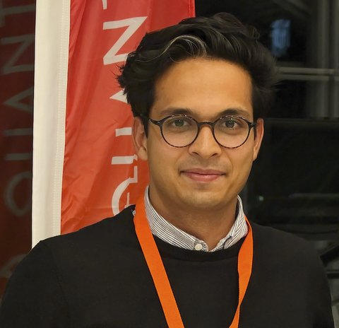

About
My name is Nimba Oshnik, I am a physicist and currently working at the intersection of quantum sensing and advanced semiconductor chip metrology.
My work emphasizes physical intuition, theory-informed modeling, and close collaboration with experiment, systems engineering, and industry.
I also enjoy scientific outreach and building simple, intuitive explanations of complex physical systems.
Work and Research
Portfolio.
-
Quantum Sensing Expert · QuantumDiamonds GmbH, Munich [Present]
Quantum Sensing for Advanced Chip Metrology
Working at the interface of semiconductor chip failure analysis and diamond-based quantum sensing platforms, developing and deploying quantum sensing methods for advanced device characterization in industrial environments.
Selected talks
- Advanced semiconductor chip analysis with quantum diamond magnetometers
- Diamond-based quantum sensing for advanced chip failure analysis
-
Researcher · Forschungszentrum Jülich GmbH
Quantum Information Processing with Solid-State Spins
In the groups of Prof. Dr. Tommaso Calarco and Prof. Dr. Frank Wilhelm-Mauch; quantum information processing and quantum computing with solid-state spin systems in diamond and silicon carbide.
Selected publications
- CnNOTe Gate optimization for Nitrogen-vacancy center and 13C-nuclear spin system
- Optimal Control for nuclear spin polarization in Nitrogen-vacancy center and 13C-nuclear spins system
-
Researcher · RPTU Kaiserslautern
Quantum Sensors for Material and Biological Research
In the group of Prof. Dr. Elke Neu-Ruffing; quantum-technology-relevant diamond material development and extending solid-state quantum sensing to life sciences relevant environments.
Selected publications
- FRET between NV centers in diamond and chlorophyll molecules: a novel resource for multimodal sensing and imaging in plant cells
- Nitrogen-vacancy centers in epitaxial laterally overgrown diamond: towards up-scaling of color center-based quantum technologies
- Medusa 84 SiH — a novel high selectivity electron beam resist for diamond quantum technologies
-
Marie Skłodowska-Curie Early-Stage Researcher · Universität des Saarlandes & TU Kaiserslautern
Quantum Optimal Control
Applied optimal control theory to improve experiments in quantum sensing with single defects in diamond.
Selected publications
- Robust magnetometry with single nitrogen-vacancy centers via two-step optimization
- Introduction to quantum optimal control for quantum sensing with nitrogen-vacancy centers in diamond
- Optimized planar microwave antenna for nitrogen vacancy center based sensing applications
- PhD thesis — Quantum optimal control for quantum sensing with nitrogen-vacancy centers
-
Research Assistant · Lund Universitet
Deep Tissue Imaging with Lasers
At the Quantum Information group of Prof. Dr. Stefan Kröll in the Atomic Physics division.
-
Masters · Central University of Tamil Nadu
Integrated Masters in Physics
In the group of Prof. Dr. R Arun on the topic of subluminal and superluminal light propagation in atomic medium [theoretical].
Outreach
Outreach Portfolio.
Building simple, intuitive explanations of complex quantum systems for broad audiences.
Mountains
Nature.
Some mountain pics